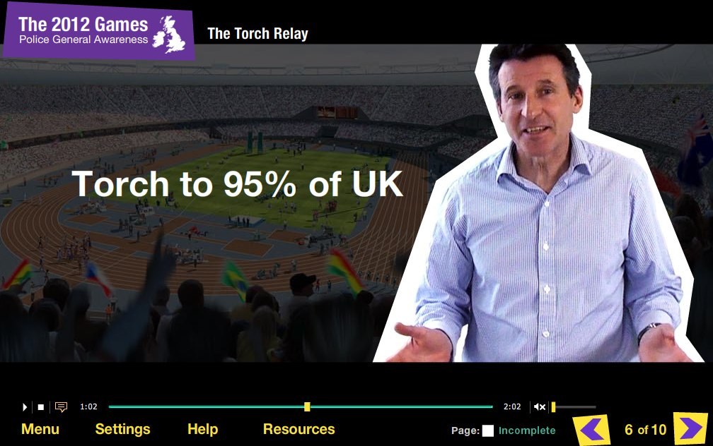

I led the production of online training that prepared police, fire and ambulance staff for the London 2012 Games. Along the way I introduced user research and an accessibility standard to the organisation.
My role
Producer, the organisation's equivalent of a product owner, with final say over a matrixed team.
Team
Three developers, three designers and three content writers.
Stakeholders
Police forces, fire and ambulance services, with meetings at the Home Office and workshops with police commissioners.
A note on age
This is earlier work. I include it for the accessibility standard, the research and the scale of the stakeholders.
The Games
There were eight mandatory Games-readiness modules. They were going to be split across the organisation. After I had won leadership's trust I took six, then a seventh. Every officer had to complete the training before the Games, and the date could not move.
A weekly prototype release
The problem
Feedback from senior leaders across policing arrived in volume and in a short window. It threatened delivery.
Chose
A prototype released every week, with one shared feedback sheet.
Result
Forces could see progress week by week. Over time the feedback moved from finding fault to trust and support.
The programme won Gold at the E-learning Age Awards. I received a Chief Constable's Commendation and a London Olympic Games Medallion.
Games-readiness module

User research where there was none
The organisation had no user research. Our offices were on the Metropolitan Police training campus at Hendon. Working with contacts in the training teams, I set up sessions with fifteen to twenty recruits at a time. I watched from the next room while tracking their progress, then ran a debrief. It became routine for every new module.
A method that fits no budget
The problem
Forces were unhappy about moving from classroom training to e-learning, and the frustration was landing on the national learning platform that every officer used.
Chose
I led a heuristic evaluation of the platform against Nielsen's ten usability heuristics. It was fast and cost almost nothing.
Result
A prioritised list that went through stakeholders and became tickets and a funded roadmap of improvements.
Some modules had basic settings for colour blindness. I extended them while working on e-learning for covert officers, then proposed a much fuller set for the 2012 modules. I researched the best examples I could find, the BBC in particular, to win support.
People could adjust colour and contrast. Every video and animation was captioned. Scripts could be downloaded and printed by anyone who could not or would not work on screen.
It became the organisation's standard for every module after that. We went beyond the legal minimum on purpose. The most detailed feedback came from police staff with access needs, often people completing the training with a colleague helping them.
Accessibility settings
The full story, including a working reconstruction of the settings, is in Designing for everyone.